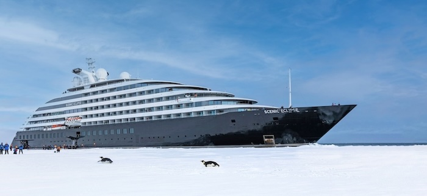
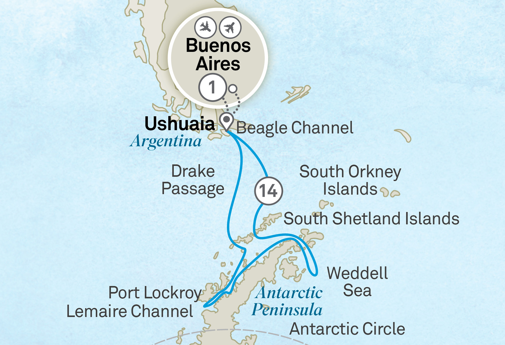
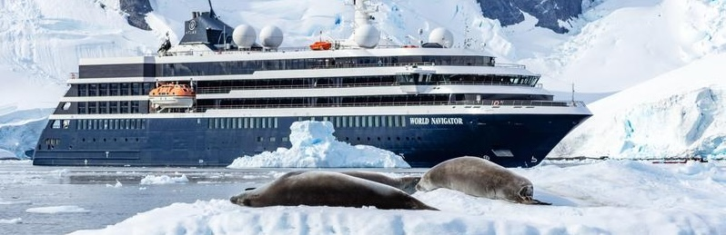

Antarctica Deals
Join us for a once-in-a-lifetime experience on these incredible expeditions, all at group pricing exclusive to the Globetrotting Kirks.
The Globetrotting Kirks are sending adventurers to Antarctica in style in December 2026, January 2027, November 2027, January 2028, AND February 2028! Take advantage of these great rates!
We've secured outrageously discounted, exclusive group pricing for THREE sailings with ultra-luxury expedition cruise line Scenic aboard their Eclipse II discovery yacht. If you've ever considered going to Antarctica, this is your chance to experience the white continent with butler service while paying budget pricing!
Additionally, for those who wish to travel to South Georgia next season, we've secured a substantial group discount with luxury expedition cruise line Atlas Ocean Voyages aboard the World Traveller private yacht.
Finally, for the most discerning of Antarctica travelers, we've secured exclusive group pricing for Quark Expeditions' November 2027 expedition to Snow Hill, which will attempt to reach the remote emperor penguin colony.
Scenic
December 2026: Exploring Antarctica and the remote Weddell Sea
December 22, 2026 – January 6, 2027

This 16-day itinerary is the perfect way for your family to enjoy the holiday season in Antarctica. After you get yourself to Buenos Aires, almost everything is included (see below). You'll spend a night in a BA hotel, then catch a charter flight to Ushuaia, the southernmost town in the world. From there, you'll spend about one and a half days crossing the Drake Passage before arriving in Antarctica on either Christmas Eve or Christmas Day!
You'll hopefully (depending on conditions) have ten full days on the continent, with excellent viewings of whales and a wide variety of penguins, such as gentoo, chinstrap, and Adelie. You'll also push into the remote Weddell Sea, where there's a tiny chance of seeing an emperor penguin! After ten days of zodiacs, kayaking, paddleboarding, polar plunging, helicoptering, submarining, and reveling in sheer luxury, you'll cross the Drake Passage again and leave with new, precious memories.
See the Scenic itinerary here.
Our exclusive prices start as low as $15,232 per person, compared to the published Wave season price of $20,258!

January AND February 2028: See king penguins and so much more on the ultimate Antarctica itinerary, with South Georgia and the Falkland Islands
January 15, 2028 – February 3, 2028
OR
February 13, 2028 – March 3, 2028 (best availability)

This 20-day sailing is our favorite itinerary. Everyone knows about Antarctica, but the secret gem is South Georgia, known as the "Galapagos of the Poles" or "Serengeti of the South", which contains the largest king penguin colonies in the world. After you get yourself to Buenos Aires, almost everything is included (other than the helicopter and submarine).
See the Scenic itinerary here.
For February, our exclusive prices start as low as $17,154 per person, compared to the published Cyber Monday price of $33,038!
For January, our exclusive prices start as low as $19,584 per person, compared to the published Cyber Monday price of $33,288!
Atlas Ocean Voyages
January 2027: See king penguins and so much more on the ultimate Antarctica itinerary, with South Georgia and the Falkland Islands
January 3, 2027 – January 21, 2027

This 18-night sailing is our absolute favorite itinerary. Everyone knows about Antarctica, but the secret gem is South Georgia, known as the "Galapagos of the Poles" or "Serengeti of the South", which contains the largest king penguin colonies in the world.
Our exclusive prices start as low as $23,062 per person, compared to the current published sale price of $25,223.
Snow Hill with Quark
November 2027: Embark on a daring expedition in search of emperor penguins
November 16, 2027 – November 29, 2027

This expedition is for the adventurers who dream of seeing in person what March of the Penguins showed us on screen. Sail with phenomenal Quark Expeditions into the Weddell Sea and attempt (there are no guarantees!) a helicopter landing on Snow Hill, where you can walk among emperor penguins in their colony. This incredible expedition is only offered a couple of times a year, when conditions are likely to be more favorable, and is guaranteed to sell out. Grab your discounted spot with us!
Our exclusive prices start as low as $25,261 per person, compared to the current published sale price of $26,671 (these prices include the mandatory charter flight and hotel package price of $1,295).